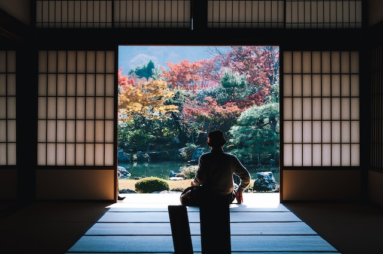

Here is your itinerary
Feel free to make edits as you see fit.

Day 1
Check into Hotel
Haneda Excel Hotel
Shibuya Crossing
See the iconic crossing in action and have a look around
Sukiyabashi Jiro
20 course omakase at Michelin Star restaurant

Day 2
Omotesando trail hike
Short 3.4km hike
Meiji Jingu Shrine
Visit the shrine
Shinjuku Gyoen National Garden
Take a stroll around the garden
Day 3
Check into ryokan (traditional inn)
Arrive for a 12pm check in
Cherry blossom viewing
At Yoyogi Park
Traditional meal
At ryokan